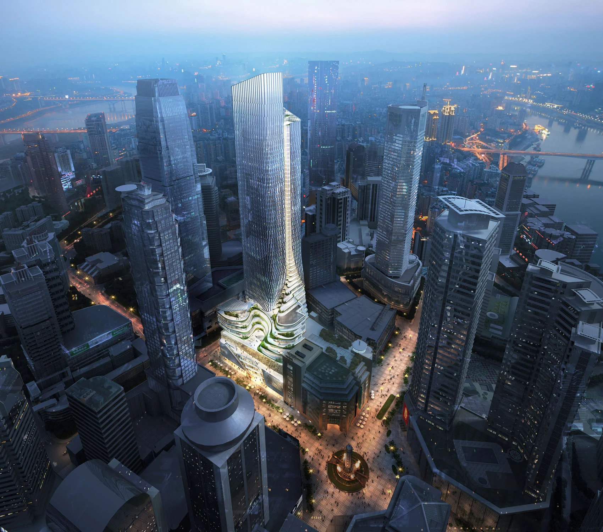
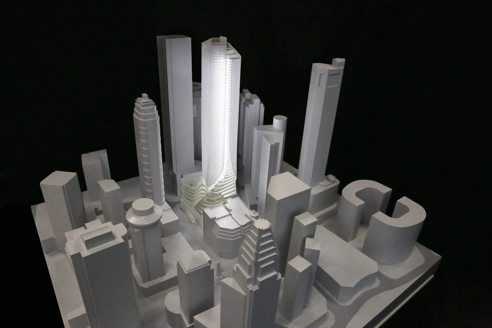
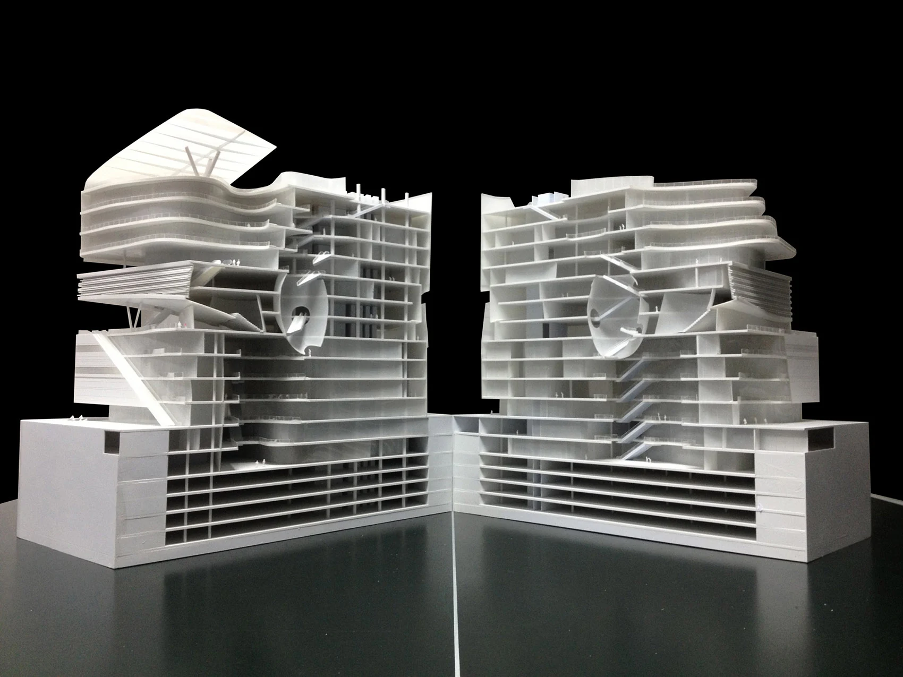
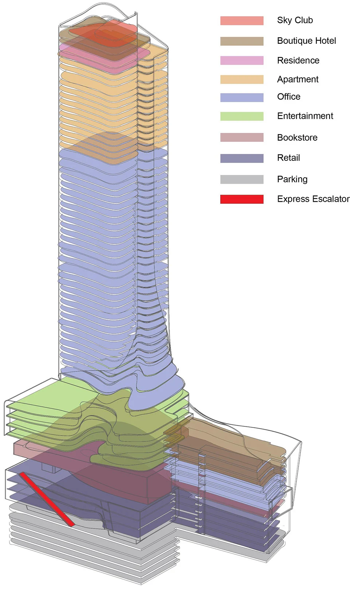
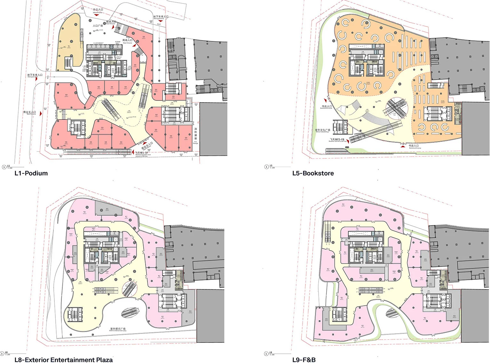
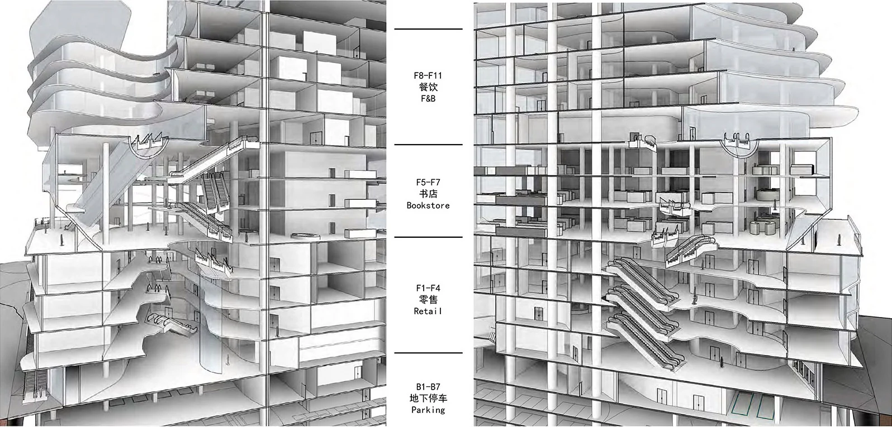
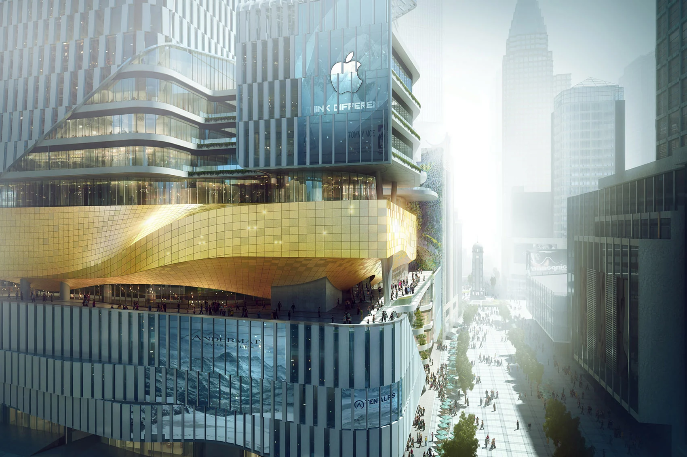
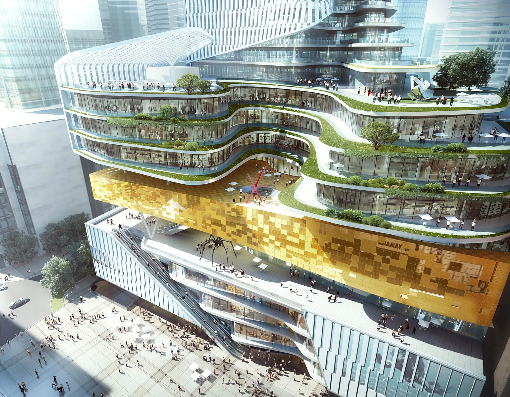

Architecture / Mixed-use
01 / PROJECT RECORD
Chongqing Xinhua Bookstore
A vertical cultural destination in Chongqing.
The project brings a bookstore, stepped public spaces and a tower into a dense urban setting.
- Role
- Architectural internship

02 / Urban form
A stepped connection to the city.
The context model and sectional model describe the relationship between the tower and its lower public spaces. A series of terraces gives the podium a different scale from the tower above.


03 / Vertical programme
Different uses, one connected section.
The programme diagram and plans set out the building's vertical organization. The section makes the relationship between occupied floors and stepped spaces legible.



04 / Public edge
Terraces give the podium depth.
Renderings show the facade, planted terraces and spaces between floors. These images document the design proposal rather than completed construction.

